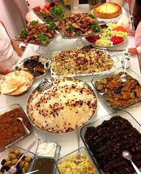

Ingredients
- Basmati rice -- 3 cups
- Oil -- 1/2 cup
- Stewing lamb or beef, cubed -- 2 pounds
- Onions, thinly sliced -- 2
- Garlic, minced -- 3 or 4
- Cinnamon -- 1 stick
- Cardamom pods -- 8 to 10
- Cumin seeds -- 2 teaspoons
- Whole cloves -- 6 to 8
- Stock or water -- 2 or 3 cups
- Salt and pepper -- to taste
- Carrots, peeled and cut into matchsticks or shredded -- 3
- Sugar -- 1/4 cup
- Raisins, soaked in water and drained -- 1/2 cup
- Ground cardamom -- 1 teaspoon
- Salt -- to taste
- Sliced almonds, toasted -- 1/2 cup
- Garam masala -- 2 teaspoons
Method
- In a large bowl, wash and drain the rice in 2 or 3 changes of water.
- Add more water to cover and set the rice aside to soak for 1 to 2 hours.
- Heat 1/4 cup of the oil in a large, heavy-bottomed pot over medium flame and, working in batches, brown the meat on all sides.
- Remove the meat to a plate and set aside.
- Add the onions to the hot oil and sauté until cooked through and softened, 4 to 5 minutes.
- Then add the garlic and whole spices and saute for another minute or so.
- Return the meat to the pot and pour in the stock or water along with salt and pepper to taste.
- Bring to a boil, then reduce heat to low, cover and simmer for about 1 1/2 hours, or until the meat is fork tender.
- Strain the meat, onions and spices from the simmering broth and set aside, reserving the broth.
- Heat the remaining 1/4 cup of oil in a saute pan or large pot over medium flame.
- Add the carrots and saute for 1 to 2 minutes to soften.
- Stir in the sugar and continue to cook for 1 or 2 more minutes to lightly caramelize the sugar, taking care not to let it burn.
- Remove from heat and carefully stir in 1 cup of the reserved broth. (Be careful.
- It may splatter a bit).
- Then stir in the raisins, cardamom and salt to taste and set aside.
- Bring a large pot of salted water to a boil.
- Drain the soaked rice and stir it into the boiling water.
- Return to a boil and cook the rice for 3 or 4 minutes.
- Then drain the rice, discarding the water, and place it into a large bowl.
- Lightly oil or grease the inside of an large ovenproof pot with a lid. Mix the remaining broth with the reserved rice.
- Spread half the rice smoothly over the bottom of the greased pot.
- Spread the reserved meat and onions evenly over the rice.
- Top the meat with the carrots and raisins.
- Finally, layer the remaining rice smoothly over the other ingredients in the pot.
- Use the handle of a wooden spoon to poke four or five holes through to the bottom of the pot.
- These holes allow excess liquid to boil out of the rice so that it doesn't get soggy.
- Cover the top of the pot with a clean kitchen towel.
- This keeps condensed steam from dripping back onto the rice.
- Finally top the pot with a tight-fitting lid and fold the overhanging towel over the lid.
- Set the pot over medium-high flame for 3 to 5 minutes.
- Next reduce heat to low and simmer gently for 15 to 20 minutes.
- Remove the pot from the heat and let it rest, covered, for another 10 minutes.
- Gently stir the rice and meat together with a large fork.
- Mound the pulao on a large serving dish and garnish with the toasted almonds and a sprinkling of garam masala.
- Serve warm.